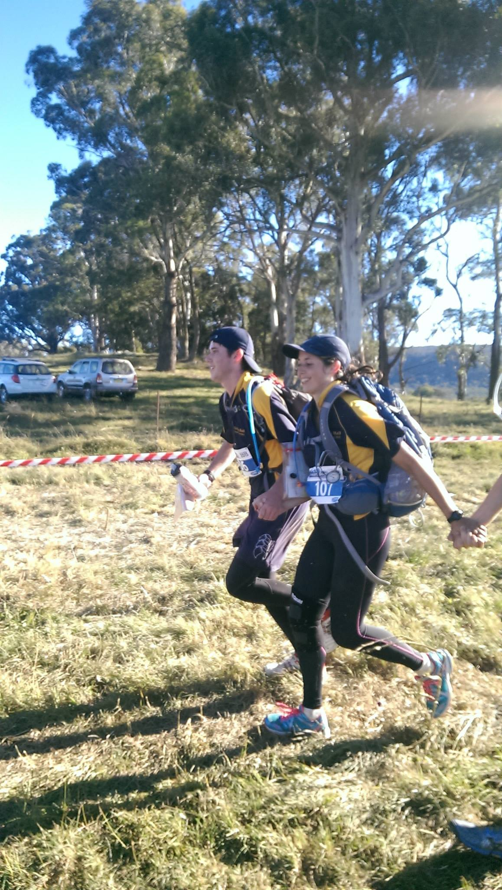

"So I thought, why don't we have something where people's skills in the bush are tested?.
Mike Gore, the first "Race Director" of Inward Bound.
Griffin's Milestones
Our achievements in Inward Bound since 2010.
Griffin wins Divs 1, 2, and Overall for the first time
Due to the immense effort of the coaching team, all 7 divs were submitted and points scoring (50/50 gender split), and Griffin showed what we can do with enormous success, particularly in the higher divisions.
Griffin first wins Division 1
Despite taking a seemingly longer route than every other team, the Div 1 team absolutely gunned it the whole way and overtook B&G, the second place team, with 2-3km remaining in the race. This achievement cemented Griffin Hall as a serious competitor in Inward Bound.
All 7 divisions submitted and finished
Over just 4 years, the squad was built up to a number big enough to submit 7 fully trained teams.
Griffin Hall founded
Australia's first non-residential hall opens at ANU, and locals get a banner to run Inward Bound under. Griffin Hall submits 3 divs this year, and wins div 6.

A great one from a past yearBest-ever results
Div 1 winners 2017, 2022, 2024, 2025. Overall winners 2025, and we're aiming to win in 2026 as well.
Past results
A template ready for your numbers. Copy a row for each division you entered each year. The example rows below are placeholders — replace every value in [brackets].
| Year | Division | Placing | Endpoint / notes |
|---|---|---|---|
| 2024 | Division 6 | 1st | Honeysuckle Creek, Namadgi National Park, ACT. Team was non point scoring |
| 2022 | Division 3 | 1st | Maloney's Beach at Bateman's Bay |
| 2019 | Division 2 | 1st | Woolcara, NSW |
| 2019 | Division 7 | 1st | Woolcara, NSW |
| 2014 | Division 6 | 1st | Cotter Dam, ACT |